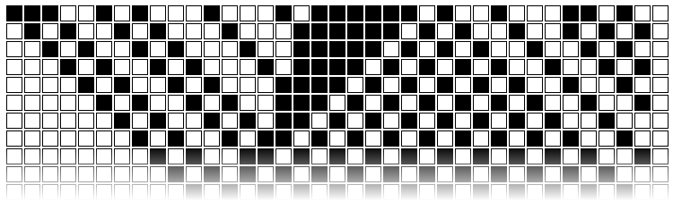

Les automates cellulaires que nous allons voir aujourd'hui n'ont pas véritablement d'utilité, ce n'est donc pas véritablement une formation que vous allez suivre, mais une manière ludique d'aborder ces êtres digitaux. Prenez le temps de sortir du cadre pour essayer les automates et détendez-vous pendant une heure.
Contrairement à d'autres formations en ligne, je n'ai pas fait appel à des vidéos. C'est un excellent média pour la formation, mais il demande du matériel, des logiciels et surtout du temps pour que la qualité soit au rendez-vous.
Une partie des automates cellulaires que vous testerez s'ouvriront sur une autre page (ou un autre onglet) de votre navigateur. Celà vous permet de suivre le cours tout en faisant les exercices à côté.
Quelques remerciements s'imposent : aux personnes qui organisent le festival de la formation. Et à Pedro Verruma pour son implémentation du jeu de la vie que vous utiliserez dans une partie du cours.
Pendant toute la journée du 16 septembre 2016, entre 9h et 16h, je serai accessible pour des questions via email (fabien.fivaz@unine.ch) ou via twitter (@ffivaz).
Prenez une feuille quadrillée, qu'on appelera canevas. Chaque carré - qu'on appelera un pixel - peut avoir plusieurs états. Pour simplifier, prenons-en deux: noir ou blanc. La première ligne de la feuille correspond à la situation initiale ou génération initiale t0.
A chaque pas, ou chaque génération, nous allons remplir une nouvelle ligne qui dépend de la ligne en dessus. La deuxième ligne correspondra donc à la première génération, ou à la première fois où nous appliquons nos règles à la situation initiale.
Les règles fixent la manière dont le système évolue d'une génération à l'autre. Dans les automates cellulaires, pour qu'il y a une intéraction entre les pixels, l'état d'un pixel ne dépend souvent pas seulement de son propre état à la génération précédente, mais également de celui de ses voisins.
Prenons une ligne de pixels au hasard. C'est notre génération initiale.
Appliquons une règle simple. Une nouvelle génération apparaît.
Comment est-on passé de la situation initiale à la première génération? Quelle règle s'applique à chaque pixel? (indice: il n'y a pas d'intéraction avec les voisins)
Pour qu'un automate soit "cellulaire", il faut que les pixels intéragissent entre eux. Nous allons maintenant définir des règles plus complexes. A chaque génération, chaque pixel dépendra de sont état à la génération précédente et de celui de son voisin de gauche, et de droite.
Une manière simple de noter les règles est représentée ci-dessous. Pour couvrir toutes les permutations possibles pour trois pixels pouvant chacun prendre deux formes, il y a 8 possibilités. Donc par exemple pour le premier cadran, si les trois pixels de la génération t1 sont noirs, le pixel observé - celui du centre - sera noir à la génération t2.
Il reste ensuite à déplacer sur la ligne un cadre imaginaire de 3 pixels et de reporter la valeur du code ci-dessus pour connaître la génération suivante.
Reprenons la situation initiale décrite quelques pages plus haut et les règles de la page précédente:
Et laissons faire la nature.
Voilà donc notre premier automate cellulaire. Pour rappel, chaque ligne correspond à une génération. Selon la notation de Wolfram (2002), ce automate cellulaire est appelé règle 254.
La situation initiale reste la même, mais les règles changent. Selon la notation de Wolfram (2002), il s'agit de la règle 90.
Et laissons faire la nature.
Celui-ci est intéressant. Il s'apparente à un motif fractal: les triangles se répètent lorsqu'on change d'échelle, voyez ici. C'est un triangle de Sierpinski.
En cliquant sur le lien ci-dessous, vous allez accéder à une page externe qui vous permet de jouer avec les automates cellulaires simples que nous avons vus. N'hésitez pas à explorer par vous-mêmes avant de poursuivre. Les pages suivantes traiteront d'un certain nombre de propriétés des automates, avec à chaque fois les exemples dans la fenêtre externe. N'hésitez pas à passer de l'un à l'autre.
>> Cliquez ici pour accéder au bac à sable <<
Etes-vous sûrs d'avoir essayé toutes les combinaisons possibles? Wolfram (2002) a identifié 256 possibilités qu'il a appelée "règles" (rules en anglais). Dans son livre "A New Kind of Science", Wolfram fait le constat suivant: la règle 254 est très simple. Elle est répétitive, comme également la règle 250. La règle 90 que nous avons vu précédemment, est déjà plus complexe, on voit se dessiner un motif fractal. D'autres règles, comme la 30 donne l'impression de dessiner des motifs aléatoires.
Lorsque j'ai dit que les automates cellulaires ne servaient à rien, je me suis un peu trop avancé. Plusieurs chercheurs les utilisent pour leur capacité d'abstraction. Des règles simples peuvent conduire à des comportements complexes. La simplicité des règles permet ainsi d'en étudier le fonctionnement. Prenons un exemple : le trafic routier.
L'automate simple numéro 184 peut être utilisé pour modéliser le trafic routier. Dans ce cas, un pixel noir est "occupé" par une voiture et un pixel blanc est libre.

La première ligne correspond à la situation initiale. Les règles sont simples: une voiture ne peut avancer que si la voie est libre devant elle.